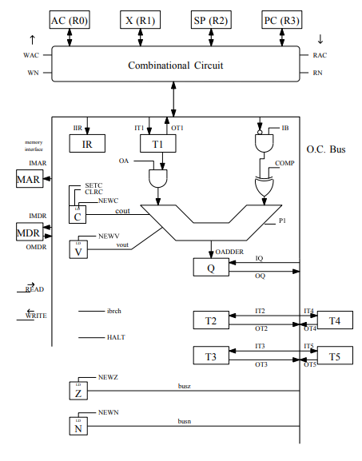

OSIAC Processor Microinstructions
(Jan 2018 - Jun 2018)
This project was involved the design of microcode for a processor (or in the case of a hard-wired processor, this was the state controller design). A 16-bit IAC processor (OSIAC) was provided to me which matched the schematic shown below.

| Addressing modes: |
| Mode |
Type |
Assembler syntax |
EA |
| 0 |
Direct |
RK |
[RK] |
| 1 |
Indirect |
(RK) |
[[RK]] |
| 2 |
Autoincrement |
(RK)+ |
[[RK]] , then [RK] + 1 → RK |
| 3 |
Autodecrement |
-(RK) |
[RK] - 1 → RK , then [[RK]] |
| 4 |
Index |
n(RK) |
[RK] + n |
| 5 |
Absolute |
n |
[n] |
| 6 |
Immediate |
#n |
n |
| Register numbers: |
| R0 |
R1 |
R2 |
R3 |
| AC |
X |
SP |
PC |
I was required to write microcode this processor to implement several simple assembly-style instructions. A list of implemented commands and addressing modes that were created for the IAC can also be found below.
| Single operand instructions to be implemented: |
| OPCode |
Instruction |
Operation |
| 01xx |
ADD |
[SRC] + [DST] → DST |
| 02xx |
SUB |
[DST] - [SRC] → DST |
| 03xx |
MOV |
[SRC] → DST |
| 04xx |
EXG |
[SRC] ↔ [DST] |
| 05xx |
AND |
[SRC] || [DST] → DST |
| 06xx |
OR |
[SRC] & [DST] → DST |
|
Double operand instructions to be implemented:
|
| OPCode |
Instruction |
Operation |
| 1xxx |
CLR |
0 → DST |
| 2xxx |
INC |
[DST] + 1 → DST |
| 3xxx |
DEC |
[DST] - 1 → DST |
| 4xxx |
NEG |
0 - [DST] → DST |
| 5xxx |
COM |
[DST]' → DST |
| 6xxx |
JMP |
EA(DST) → PC |
| 7xxx |
JSR |
[SP] - 1 → SP , [PCUDP] → [SP] , EA(DST) → PC |
| 8xxx |
TST |
[DST] - 0 → DST |
| Single Operand Format |
| B15-12 |
B11-8 |
B7-4 |
B3-2 |
B1-0 |
| 0000 |
OP CODE |
DST Address Mode |
XX |
DST Register |
| Double Operand Format |
| B15-12 |
B11-8 |
B7-4 |
B3-2 |
B1-0 |
| OP CODE |
SRC Address Mode |
DST Address Mode |
SRC Register |
DST Register |
The microcode for this IAC was written in the following form:
st=[STATE#] rt='[COMMENT]' [MICROINSTRUCTIONS]
The form for conditional statements is shown below:
cond='[CONDITION]' value=[VALUE_OF_CONDITION] nst=[NEXT_STATE]
The microinstructions referenced in standard OSIAC microcode can be found in the OSIAC schematic above. Typically they follow a simple in (iRK) / out (oRK) format. The instructions which don't follow these rules are listed below:
| Microinstruction |
Action |
| rac / wac |
Sets read / write to core registers (0 = no access, 1 = access direct from microinstruction, 2 = access from IR SRC bits, 3 = access from IR DST bits) |
| rn / wn |
Sets register number for direct from microinstruction read / write |
| ib |
1 = bus into adder, 0 = 0 into adder |
| oa |
1 = T1 into adder, 0 = 0 into adder |
| p1 |
Adds 1 to the adder |
| oadder |
Latches sum of adder into Q |
| read / write |
Read / write to memory from MAR and MDR |
| halt |
Stops the processor |
| newc, newv, newz, newn, setc, setv, clrc, clrv |
Set/clear CVZN bits |
Finally, my final code for the project is found below. Please note that we were graded on code functionality, and design efficiency is not taken into account. States could have been combined (all autoincrements / autodecrements could be merged, etc.) to add additional timing efficiency and decrease complexity. The design was left expanded in this case to allow for easier debugging.
***************************
** ECE 5362 **
**** Machine Problem 4 ****
**** Samuel Taylor ****
***************************
*** *** *** *** *** *** *** *** Start fetch cycle *** *** *** *** *** *** *** ***
st=0 rt='[pc] -> mar' imar rac=1 rn=3
st=1 rt='[[mar]] -> mdr' read
st=2 rt='[mdr] -> ir' omdr iir
st=3 rt='[pc]+1 -> q' rac=1 rn=3 ib p1 oadder
st=4 rt='[q] -> pc' oq wac=1 wn=3
cond='ir158' value=01 nst=331
cond='ir158' value=02 nst=74
cond='ir158' value=03 nst=363
cond='ir158' value=04 nst=20
cond='ir158' value=05 nst=401
cond='ir158' value=06 nst=435
cond='ir158' value=07 nst=240
cond='ir158' value=08 nst=451
cond='ir158' value=00 nst=330
cond='ir1512' value=01 nst=104
cond='ir1512' value=02 nst=171
cond='ir1512' value=03 nst=492
cond='ir1512' value=04 nst=31
cond='ir1512' value=05 nst=543
cond='ir1512' value=06 nst=599
cond='ir108' value=2 nst=673
nst=10
*** *** *** *** *** *** *** *** HALT execution cycle *** *** *** *** *** *** *** ***
st=10 halt
st=11 rt='[t2] -> rD' ot2 wac=3
nst=32
st=12 rt='[q] -> rD' oq wac=3 it1
nst=23
*** *** *** *** *** *** *** *** NEG rD execution cycle *** *** *** *** *** *** *** ***
st=20 rt='[rD] -> t1' rac=3 it1
cond='ir64' value=3 nst=29
cond='ir64' value=0 nst=21
cond='ir64' value=4 nst=60
cond='ir64' value=5 nst=66
cond='ir64' value=6 nst=10
nst=23
** Destination is direct
st=21 rt='0-[t1] -> q' ib comp p1 oadder ot1 newc newv
st=22 rt='[q] -> rD' oq wac=3 newn newz
nst=0
** Destination is indirect
st=23 rt='[t1] -> mar' ot1 imar
st=24 rt='[[mar]] -> mdr' read
st=25 rt='0-[mdr] -> q' ib comp p1 oadder omdr newc newv
st=26 rt='[q] -> mdr' oq imdr newn newz
st=27 rt='[mdr] -> [mar]' write
cond='ir64' value=2 nst=28
nst=0
st=28 rt='[t1]+1 -> q' oa p1 oadder ot1
nst=30
st=29 rt='[t1]-1 -> q' oa comp oadder ot1
nst=12
st=30 rt='[q] -> rD' oq wac=3
nst=0
*** *** *** *** *** *** *** *** EXG rD,rS execution cycle *** *** *** *** *** *** *** ***
** Direct
st=31 rt='[rD] -> t2' rac=3 it2
cond='ir108' value=3 nst=45
cond='ir64' value=3 nst=57
nst=32
st=32 rt='[rS] -> t3' rac=2 it3
cond='ir108' value=0 nst=33
nst=36
st=33 rt='[rS] -> t5' rac=2 it5
cond='ir64' value=0 nst=34
nst=48
** Source and Destination are direct
st=34 rt='[rD] -> rS' rac=3 wac=2
st=35 rt='[t5] -> rD' ot5 wac=3
nst=0
** Source is indirect
st=36 rt='[t3] -> mar' ot3 imar
st=37 rt='[[mar]] -> mdr' read
st=38 rt='[mdr] -> t5' omdr it5
st=39 rt='[rD] -> mdr' rac=3 imdr
st=40 rt='[mdr] -> [mar]' write
st=41 rt='[t5] -> rD' ot5 wac=3
cond='ir108' value=2 nst=42
nst=0
** Autoincrement src
st=42 rt='[rS] -> t1' rac=2 it1
st=43 rt='[t1]+1 -> q' oa p1 oadder
st=44 rt='[q] -> rS' oq wac=2
nst=0
** Autodecrement src
st=45 rt='[rS] -> t1' rac=2 it1
st=46 rt='[t1]-1 -> q' oa comp oadder
st=47 rt='[q] -> rS' oq wac=2
nst=32
** Destination is indirect
st=48 rt='[t2] -> mar' ot2 imar
st=49 rt='[[mar]] -> mdr' read
st=50 rt='[mdr] -> t5' omdr it5
st=51 rt='[rS] -> mdr' rac=2 imdr
st=52 rt='[mdr] -> [mar]' write
st=53 rt='[t5] -> rS' ot5 wac=2
cond='ir64' value=2 nst=54
nst=0
** Autoincrement dst
st=54 rt='[rD] -> t1' rac=3 it1
st=55 rt='[t1]+1 -> q' oa p1 oadder
st=56 rt='[q] -> rD' oq wac=3
nst=0
** Autodecrement dst
st=57 rt='[t2] -> t1' ot2 it1
st=58 rt='[t1]-1 -> q' oa comp oadder
st=59 rt='[q] -> t2' oq it2
nst=11
*** *** *** *** *** *** *** *** NEG INDEX MODE *** *** *** *** *** *** *** ***
st=60 rt='[pc] -> mar' rac=1 rn=3 imar
st=61 rt='[[mar]] -> mdr' read
st=62 rt='[mdr]+[t1] -> q' oa omdr ib oadder
st=63 rt='[q] -> t1' oq it1
st=64 rt='[pc]+1 -> q' rac=1 rn=3 ib p1 oadder
st=65 rt='[q] -> pc' oq wac=1 wn=3
nst=23
*** *** *** NEG ABS MODE *** *** ***
st=66 rt='[pc] -> mar' rac=1 rn=3 imar
st=67 rt='[[mar]] -> mdr' read
st=68 rt='[mdr] -> t1' omdr it1
st=69 rt='[pc]+1 -> q' rac=1 rn=3 ib p1 oadder
st=70 rt='[q] -> pc' oq wac=1 wn=3
nst=23
*** *** *** NEG IMMEDIATE MODE *** *** ***
st=71 rt='[pc] -> t1' rac=1 rn=3 it1
st=72 rt='[pc]+1 -> q' rac=1 rn=3 ib p1 oadder
st=73 rt='[q] -> pc' oq wac=1 wn=3
nst=23
*** *** *** *** *** *** *** *** INC execution cycle *** *** *** *** *** *** *** ***
** Direct
st=74 rt='[rD] -> t1' rac=3 it1
cond='ir64' value=3 nst=86
cond='ir64' value=0 nst=75
cond='ir64' value=4 nst=89
cond='ir64' value=5 nst=96
cond='ir64' value=6 nst=10
nst=77
st=75 rt='[t1] + 1 -> q' oa p1 oadder newc newv
st=76 rt='[q] -> rD' oq wac=3 newz newn
nst=0
** Destination is indirect
st=77 rt='[t1] -> mar' ot1 imar
st=78 rt='[[mar]] -> mdr' read
st=79 rt='[[mdr] -> t1' omdr it1
st=80 rt='[t1] + 1 -> q' oa p1 oadder newc newv
st=81 rt='[q] -> mdr' oq imdr
st=82 rt='[mdr] -> [mar]' write
cond='ir64' value=2 nst=83
nst=0
** Autoincrement
st=83 rt='[rD] -> t1' rac=3 it1
st=84 rt='[t1] + 1 -> q' oa p1 oadder
st=85 rt='[t1] -> rD' wac=3 oq
nst=0
** Autodecrement
st=86 rt='[rD] -> t1' rac=3 it1
st=87 rt='[t1] - 1 -> q' oa comp oadder
st=88 rt='[q] -> rD & t1' wac=3 oq it1
nst=77
** Index
st=89 rt='[pc] -> mar' rac=1 rn=3 imar
st=90 rt='[[mar]] -> mdr' read
st=91 rt='[mdr] -> t2' omdr it2
st=92 rt='[pc]+1 -> q' rac=1 rn=3 ib p1 oadder
st=93 rt='[q] -> pc' oq wac=1 wn=3
st=94 rt='[t1]+[t2] -> q' ot2 ib oa oadder
st=95 rt='[q] -> t1' oq it1
nst=77
** Absolute
st=96 rt='[pc] -> mar' rac=1 rn=3 imar
st=97 rt='[[mar]] -> mdr' read
st=98 rt='[mdr] -> t1' omdr it1
st=99 rt='[pc]+1 -> q' rac=1 rn=3 ib p1 oadder
st=100 rt='[q] -> pc' oq wac=1 wn=3
nst=77
**Immediate
st=101 rt='[pc] -> t1' rac=1 rn=3 it1
st=102 rt='[pc]+1 -> q' rac=1 rn=3 ib p1 oadder
st=103 rt='[q] -> pc' oq wac=1 wn=3
nst=77
*** *** *** *** *** *** *** *** ADD execution cycle *** *** *** *** *** *** *** ***
** Direct
st=104 rt='[rS] -> t2' rac=2 it2
st=105 rt='[rD] -> t3' rac=3 it3
cond='ir108' value=3 nst=126
cond='ir108' value=0 nst=106
cond='ir108' value=4 nst=132
cond='ir108' value=5 nst=146
cond='ir108' value=6 nst=156
nst=109
st=106 rt='[t2] -> t1' ot2 it1
cond='ir64' value=3 nst=129
cond='ir64' value=0 nst=107
cond='ir64' value=4 nst=139
cond='ir64' value=5 nst=151
cond='ir64' value=6 nst=10
nst=114
st=107 rt='[t1]+t3 -> q' oa ot3 ib oadder newc newv
st=108 rt='[q] -> rD' oq wac=3 newn newz
nst=0
** Indirect SRC
st=109 rt='[t2] -> mar' ot2 imar
st=110 rt='[[mar]] -> mdr' read
st=111 rt='[mdr] -> t1' omdr it1
st=112 rt='[t1]+[t3] -> q' oa ot3 ib oadder newc newv
st=113 rt='[q] -> rD' oq wac=3 newn newz
cond='ir108' value=2 nst=120
nst=0
** Indirect DST
st=114 rt='[t3] -> mar' ot3 imar
st=115 rt='[[mar]] -> mdr' read
st=116 rt='[mdr] -> t1' omdr it1
st=117 rt='[t1]+[t2] -> q' oa ot2 ib oadder newc newv
st=118 rt='[q] -> mdr' oq imdr newn newz
st=119 rt='[mdr] -> [mar]' write
cond='ir64' value=2 nst=123
nst=0
** AutoInc SRC
st=120 rt='[rS] -> t1' rac=2 it1
st=121 rt='[t1]+1 -> q' oa p1 oadder
st=122 rt='[q] -> rS' wac=2 oq
nst=0
** AutoInc DST
st=123 rt='[rD] -> t1' rac=3 it1
st=124 rt='[t1]+1 -> q' oa p1 oadder
st=125 rt='[q] -> rD' wac=3 oq
nst=0
** AutoDec SRC
st=126 rt='[rS] -> t1' rac=2 it1
st=127 rt='[t1]-1 -> q' oa comp oadder
st=128 rt='[q] -> rS' wac=2 oq it2
nst=109
** AutoDec DST
st=129 rt='[rD] -> t1' rac=3 it1
st=130 rt='[t1]-1 -> q' oa comp oadder
st=131 rt='[q] -> rD' wac=3 oq it3
nst=114
** Index SRC
st=132 rt='[pc] -> mar' rac=1 rn=3 imar
st=133 rt='[[mar]] -> mdr' read
st=134 rt='[mdr] -> t1' omdr it1
st=135 rt='[pc]+1 -> q' rac=1 rn=3 ib p1 oadder
st=136 rt='[q] -> pc' oq wac=1 wn=3
st=137 rt='[t1]+[t2] -> q' oa ot2 ib oadder
st=138 rt='[q] -> t2' oq it2
nst=109
** Index DST
st=139 rt='[pc] -> mar' rac=1 rn=3 imar
st=140 rt='[[mar]] -> mdr' read
st=141 rt='[mdr] -> t1' omdr it1
st=142 rt='[pc]+1 -> q' rac=1 rn=3 ib p1 oadder
st=143 rt='[q] -> pc' oq wac=1 wn=3
st=144 rt='[t1]+[t3] -> q' oa ot3 ib oadder
st=145 rt='[q] -> t3' oq it3
nst=114
** Absolute SRC
st=146 rt='[pc] -> mar' rac=1 rn=3 imar
st=147 rt='[[mar]] -> mdr' read
st=148 rt='[mdr] -> t2' omdr it2
st=149 rt='[pc]+1 -> q' rac=1 rn=3 ib p1 oadder
st=150 rt='[q] -> pc' oq wac=1 wn=3
nst=109
** Absolute DST
st=151 rt='[pc] -> mar' rac=1 rn=3 imar
st=152 rt='[[mar]] -> mdr' read
st=153 rt='[mdr] -> t3' omdr it3
st=154 rt='[pc]+1 -> q' rac=1 rn=3 ib p1 oadder
st=155 rt='[q] -> pc' oq wac=1 wn=3
nst=114
** Immediate SRC
st=156 rt='[pc] -> mar' rac=1 rn=3 imar
st=157 rt='[[mar]] -> mdr' read
st=158 rt='[mdr] -> t1' omdr it1
st=159 rt='[pc]+1 -> q' rac=1 rn=3 ib p1 oadder
st=160 rt='[q] -> pc' oq wac=1 wn=3
st=161 rt='[t1]+[t3] -> q' oa ot3 ib oadder newc newv
st=162 rt='[q] -> rD' wac=3 oq newn newz
nst=0
** Immediate DST
st=163 rt='[pc] -> mar' rac=1 rn=3 imar
st=164 rt='[[mar]] -> mdr' read
st=165 rt='[mdr] -> t1' omdr it1
st=166 rt='[pc]+1 -> q' rac=1 rn=3 ib p1 oadder
st=167 rt='[q] -> pc' oq wac=1 wn=3
st=168 rt='[t1]+[t2] -> q' oa ot2 ib oadder newc newv
st=169 rt='[q] -> mdr' oq imdr newn newz
st=170 rt='[mdr] -> [mar]' write
nst=0
*** *** *** *** *** *** *** *** SUB execution cycle *** *** *** *** *** *** *** ***
** Direct
st=171 rt='[rS] -> t2' rac=2 it2
st=172 rt='[rD] -> t3' rac=3 it3
cond='ir108' value=3 nst=194
cond='ir108' value=0 nst=173
cond='ir108' value=4 nst=200
cond='ir108' value=5 nst=214
cond='ir108' value=6 nst=224
nst=176
st=173 rt='[t3] -> t1' ot3 it1
cond='ir64' value=3 nst=197
cond='ir64' value=0 nst=174
cond='ir64' value=4 nst=207
cond='ir64' value=5 nst=219
cond='ir64' value=6 nst=10
nst=182
st=174 rt='[t1]-t2 -> q' oa ot2 ib p1 comp oadder setc newv
st=175 rt='[q] -> rD' oq wac=3 newn newz
nst=0
** Indirect SRC
st=176 rt='[t2] -> mar' ot2 imar
st=177 rt='[[mar]] -> mdr' read
st=178 rt='[mdr] -> t4' omdr it4
st=179 rt='[t3] -> t1' ot3 it1
st=180 rt='[t1]-[t4] -> q' oa ot4 ib p1 comp oadder newc newv
st=181 rt='[q] -> rD' oq wac=3 newn newz
cond='ir108' value=2 nst=188
nst=0
** Indirect DST
st=182 rt='[t3] -> mar' ot3 imar
st=183 rt='[[mar]] -> mdr' read
st=184 rt='[mdr] -> t1' omdr it1
st=185 rt='[t1]-[t2] -> q' oa ot2 ib p1 comp oadder newc newv
st=186 rt='[q] -> mdr' oq imdr newn newz
st=187 rt='[mdr] -> [mar]' write
cond='ir64' value=2 nst=191
nst=0
** AutoInc SRC
st=188 rt='[rS] -> t1' rac=2 it1
st=189 rt='[t1]+1 -> q' oa p1 oadder newc newv
st=190 rt='[q] -> rS' wac=2 oq newn newz
nst=0
** AutoInc DST
st=191 rt='[rD] -> t1' rac=3 it1
st=192 rt='[t1]+1 -> q' oa p1 oadder
st=193 rt='[q] -> rD' wac=3 oq
nst=0
** AutoDec SRC
st=194 rt='[rS] -> t1' rac=2 it1
st=195 rt='[t1]-1 -> q' oa comp oadder
st=196 rt='[q] -> rS' wac=2 oq it2
nst=176
** AutoDec DST
st=197 rt='[rD] -> t1' rac=3 it1
st=198 rt='[t1]-1 -> q' oa comp oadder
st=199 rt='[q] -> rD' wac=3 oq it3
nst=182
** Index SRC
st=200 rt='[pc] -> mar' rac=1 rn=3 imar
st=201 rt='[[mar]] -> mdr' read
st=202 rt='[mdr] -> t1' omdr it1
st=203 rt='[pc]+1 -> q' rac=1 rn=3 ib p1 oadder
st=204 rt='[q] -> pc' oq wac=1 wn=3
st=205 rt='[t1]+[t2] -> q' oa ot2 ib oadder
st=206 rt='[q] -> t2' oq it2
nst=176
** Index DST
st=207 rt='[pc] -> mar' rac=1 rn=3 imar
st=208 rt='[[mar]] -> mdr' read
st=209 rt='[mdr] -> t1' omdr it1
st=210 rt='[pc]+1 -> q' rac=1 rn=3 ib p1 oadder
st=211 rt='[q] -> pc' oq wac=1 wn=3
st=212 rt='[t1]+[t3] -> q' oa ot3 ib oadder
st=213 rt='[q] -> t3' oq it3
nst=182
** Absolute SRC
st=214 rt='[pc] -> mar' rac=1 rn=3 imar
st=215 rt='[[mar]] -> mdr' read
st=216 rt='[mdr] -> t2' omdr it2
st=217 rt='[pc]+1 -> q' rac=1 rn=3 ib p1 oadder
st=218 rt='[q] -> pc' oq wac=1 wn=3
nst=176
** Absolute DST
st=219 rt='[pc] -> mar' rac=1 rn=3 imar
st=220 rt='[[mar]] -> mdr' read
st=221 rt='[mdr] -> t3' omdr it3
st=222 rt='[pc]+1 -> q' rac=1 rn=3 ib p1 oadder
st=223 rt='[q] -> pc' oq wac=1 wn=3
nst=182
** Immediate SRC
st=224 rt='[pc] -> mar' rac=1 rn=3 imar
st=225 rt='[[mar]] -> mdr' read
st=226 rt='[mdr] -> t4' omdr it4
st=227 rt='[t3] -> t1' ot3 it1
st=228 rt='[pc]+1 -> q' rac=1 rn=3 ib p1 oadder
st=229 rt='[q] -> pc' oq wac=1 wn=3
st=230 rt='[t1]-[t4] -> q' oa ot4 ib p1 comp oadder clrc newv
st=231 rt='[q] -> rD' wac=3 oq newn newz
nst=0
** Immediate DST
st=232 rt='[pc] -> mar' rac=1 rn=3 imar
st=233 rt='[[mar]] -> mdr' read
st=234 rt='[mdr] -> t1' omdr it1
st=235 rt='[pc]+1 -> q' rac=1 rn=3 ib p1 oadder
st=236 rt='[q] -> pc' oq wac=1 wn=3
st=237 rt='[t1]-[t2] -> q' oa ot2 ib p1 comp oadder newc newv
st=238 rt='[q] -> mdr' oq imdr newn newz
st=239 rt='[mdr] -> [mar]' write
nst=0
*** *** *** *** *** *** *** *** JSR execution cycle *** *** *** *** *** *** *** ***
** Indirect
st=240 rt='[sp] -> t1' rac=1 rn=2 it1
st=241 rt='[t1]-1 -> q' oa comp oadder
st=242 rt='[q] -> sp' oq wac=1 wn=2 imar
st=243 rt='[pc]+1 -> q' rac=1 rn=3 ib p1 oadder
st=244 rt='[q] -> mdr' oq imdr
st=245 rt='[mdr] -> [mar]' write
st=246 rt='[rD] -> t2' rac=3 it2
cond='ir64' value=3 nst=251
cond='ir64' value=4 nst=254
cond='ir64' value=5 nst=261
nst=247
st=247 rt='[t2] -> pc' ot2 wac=1 wn=3 newz newn
cond='ir64' value=2 nst=248
nst=0
** AutoInc DST
st=248 rt='[rD] -> t1' rac=3 it1
st=249 rt='[t1]+1 -> q' oa p1 oadder
st=250 rt='[q] -> rD' wac=3 oq
nst=0
** AutoDec DST
st=251 rt='[rD] -> t1' rac=3 it1
st=252 rt='[t1]-1 -> q' oa comp oadder
st=253 rt='[q] -> rD & t2' wac=3 oq it2
nst=247
** Index DST
st=254 rt='[pc] -> mar' rac=1 rn=3 imar
st=255 rt='[[mar]] -> mdr' read
st=256 rt='[mdr] -> t1' omdr it1
st=257 rt='[pc]+1 -> q' rac=1 rn=3 ib p1 oadder
st=258 rt='[q] -> pc' oq wac=1 wn=3
st=259 rt='[t1]+[t2] -> q' oa ot2 ib oadder
st=260 rt='[q] -> t2' oq it2
nst=247
** Absolute DST
st=261 rt='[pc] -> mar' rac=1 rn=3 imar
st=262 rt='[[mar]] -> mdr' read
st=263 rt='[mdr] -> t2' omdr it2
nst=247
*** *** *** *** *** *** *** *** CHECK CVZN BRANCH CONDITIONS *** *** *** *** *** *** *** ***
st=264 rt='check BEQ'
cond='ir5' value=0 nst=265
nst=271
st=265 rt='ir5==0'
cond='ir4' value=1 nst=266
nst=271
st=266 rt='ir4==1'
cond='ir3' value=0 nst=267
nst=271
st=267 rt='ir3==0'
cond='ir2' value=0 nst=268
nst=271
st=268 rt='ir2==0'
cond='ir1' value=1 nst=269
nst=271
st=269 rt='ir1==0'
cond='ir0' value=0 nst=270
nst=271
st=270 rt='found beq!'
cond='z' value=1 nst=308
nst=314
st=271 rt='check BNE'
cond='ir5' value=0 nst=272
nst=278
st=272 rt='ir5==0'
cond='ir4' value=0 nst=273
nst=278
st=273 rt='ir4==0'
cond='ir3' value=0 nst=274
nst=278
st=274 rt='ir3==0'
cond='ir2' value=0 nst=275
nst=278
st=275 rt='ir2==0'
cond='ir1' value=1 nst=276
nst=278
st=276 rt='ir1==1'
cond='ir0' value=0 nst=277
nst=278
st=277 rt='found BNE!'
cond='z' value=1 nst=314
nst=308
st=278 rt='check BMI'
cond='ir5' value=0 nst=279
nst=285
st=279 rt='ir5==0'
cond='ir4' value=1 nst=280
nst=285
st=280 rt='ir4==1'
cond='ir3' value=0 nst=281
nst=285
st=281 rt='ir3==0'
cond='ir2' value=0 nst=282
nst=285
st=282 rt='ir2==0'
cond='ir1' value=0 nst=283
nst=285
st=283 rt='ir1==0'
cond='ir0' value=1 nst=284
nst=285
st=284 rt='found BMI!'
cond='n' value=1 nst=308
nst=314
st=285 rt='check BPL'
cond='ir5' value=0 nst=286
nst=292
st=286 rt='ir5==0'
cond='ir4' value=0 nst=287
nst=292
st=287 rt='ir4==0'
cond='ir3' value=0 nst=288
nst=292
st=288 rt='ir3==0'
cond='ir2' value=0 nst=289
nst=292
st=289 rt='ir2==0'
cond='ir1' value=0 nst=290
nst=292
st=290 rt='ir1==0'
cond='ir0' value=1 nst=291
nst=292
st=291 rt='found BPL!'
cond='n' value=0 nst=308
nst=314
st=292 rt='check BLS'
cond='ir5' value=0 nst=293
nst=300
st=293 rt='ir5==0'
cond='ir4' value=1 nst=294
nst=300
st=294 rt='ir4==1'
cond='ir3' value=1 nst=295
nst=300
st=295 rt='ir3==1'
cond='ir2' value=0 nst=296
nst=300
st=296 rt='ir2==0'
cond='ir1' value=1 nst=297
nst=300
st=297 rt='ir1==1'
cond='ir0' value=0 nst=299
nst=300
st=299 rt='found BLS'
cond='n' value=1 nst=308
nst=316
st=300 rt='check BHI'
cond='ir5' value=1 nst=301
nst=314
st=301 rt='ir5==1'
cond='ir4' value=1 nst=302
nst=314
st=302 rt='ir4==1'
cond='ir3' value=1 nst=303
nst=314
st=303 rt='ir3==1'
cond='ir2' value=0 nst=304
nst=314
st=304 rt='ir2==0'
cond='ir1' value=1 nst=305
nst=314
st=305 rt='ir1==1'
cond='ir0' value=0 nst=307
nst=314
st=307 rt='found BMI'
cond='cout' value=1 nst=308
nst=314
*** *** *** *** *** *** *** *** BRANCH execution cycle *** *** *** *** *** *** *** ***
st=308 rt='[pc] -> mar' imar rac=1 rn=3
st=309 rt='[[mar]] -> mdr' read
st=310 rt='[mdr] -> t2' omdr it2
st=311 rt='[pc] -> t1' rac=1 rn=3 it1
st=312 rt='[t1]+[t2]+1 -> q' oa ot2 ib oadder p1
st=313 rt='[q] -> pc' oq wac=1 wn=3
nst=0
st=314 rt='NO BRCH,[pc]+1->q' rac=1 rn=3 ib p1 oadder
st=315 rt='[q] -> pc' oq wac=1 wn=3
nst=0
*** *** *** *** *** *** *** *** RTS execution cycle *** *** *** *** *** *** *** ***
st=316 rt='bls 2nd cond'
cond='cout' value=1 nst=308
nst=314
st=317 rt='RTS: check ir64'
cond='ir64' value=0 nst=318
nst=264
st=318 rt='RTS: check ir3'
cond='ir3' value=0 nst=319
nst=264
st=319 rt='RTS: check ir2'
cond='ir2' value=0 nst=320
nst=0
st=320 rt='RTS: check ir1'
cond='ir1' value=0 nst=321
nst=264
st=321 rt='RTS: check ir0'
cond='ir0' value=0 nst=322
nst=264
st=322 rt='[sp] -> mar' imar rac=1 rn=2
st=323 rt='[[mar]] -> mdr' read
st=324 rt='[mdr] -> pc' omdr wac=1 wn=3
st=325 rt='[pc] -> q' rac=1 rn=3 ib oadder newz newn
st=326 rt='[q] -> pc' oq wac=1 wn=3
st=327 rt='[sp] -> t1' rac=1 rn=2 it1
st=328 rt='[t1]+1 -> q' oa p1 oadder
st=329 rt='[q] -> sp' oq wac=1 wn=2
nst=0
st=330 rt='test ibrch'
cond='ir75' value=5 nst=264
cond='ir75' value=4 nst=317
cond='ir75' value=1 nst=712
cond='ir75' value=0 nst=10
*** *** *** *** *** *** *** *** CLR execution cycle *** *** *** *** *** *** *** ***
st=331 rt='CLR execute'
cond='ir64' value=3 nst=342
nst=332
st=332 rt='[rD] -> t1' rac=3 it1 clrv clrc
st=333 rt='[rD]-[rD] -> q' oa rac=3 ib p1 comp oadder newz newn
st=334 rt='new z'
cond='ir64' value=0 nst=335
cond='ir64' value=4 nst=345
cond='ir64' value=5 nst=355
nst=336
** Direct Mode
st=335 rt='[q] -> rD' oq wac=3
nst=0
** Indirect Mode
st=336 rt='rD -> mar' rac=3 imar
st=337 rt='[q] -> mdr' oq imdr
st=338 rt='[mdr] -> [mar]' write
cond='ir64' value=2 nst=339
nst=0
** AutoInc DST
st=339 rt='[rD] -> t1' rac=3 it1
st=340 rt='[t1]+1 -> q' oa p1 oadder
st=341 rt='[q] -> rD' wac=3 oq
nst=0
** AutoDec DST
st=342 rt='[rD] -> t1' rac=3 it1
st=343 rt='[t1]-1 -> q' oa comp oadder
st=344 rt='[q] -> rD' wac=3 oq
nst=332
** Index
st=345 rt='[q] -> t3' oq it3
st=346 rt='[pc] -> mar' rac=1 rn=3 imar
st=347 rt='[[mar]] -> mdr' read
st=348 rt='[mdr] -> t1' omdr it1
st=349 rt='[pc]+1 -> q' rac=1 rn=3 ib p1 oadder
st=350 rt='[q] -> pc' oq wac=1 wn=3
st=351 rt='[t1]+[rD] -> q' oa rac=3 ib oadder
st=352 rt='[q] -> mar' oq imar
st=353 rt='[t3] -> mdr' ot3 imdr
st=354 rt='[mdr] -> [mar]' write
nst=0
** Absolute
st=355 rt='[q] -> t3' oq it3
st=356 rt='[pc] -> mar' rac=1 rn=3 imar
st=357 rt='[[mar]] -> mdr' read
st=358 rt='[mdr] -> mar' omdr imar
st=359 rt='[pc]+1 -> q' rac=1 rn=3 ib p1 oadder
st=360 rt='[q] -> pc' oq wac=1 wn=3
st=361 rt='[t3] -> mdr' ot3 imdr
st=362 rt='[mdr] -> [mar]' write
nst=0
*** *** *** *** *** *** *** *** DEC execution cycle *** *** *** *** *** *** *** ***
st=363 rt='DEC execute'
cond='ir64' value=0 nst=364
cond='ir64' value=1 nst=367
cond='ir64' value=2 nst=367
cond='ir64' value=3 nst=376
cond='ir64' value=4 nst=379
cond='ir64' value=5 nst=391
nst=10
** Direct
st=364 rt='[rD] -> t1' rac=3 it1
st=365 rt='[t1]-1 -> q' oa comp oadder ot1 newc newv
st=366 rt='[q] -> rD' wac=3 oq newz newn
nst=0
** Indirect
st=367 rt='[rD] -> mar' rac=3 imar
st=368 rt='[[mar]] -> mdr' read
st=369 rt='[mdr] -> t1' omdr it1
st=370 rt='[t1]-1 -> q' oa comp oadder ot1 newc newv
st=371 rt='[q] -> mdr' oq imdr newz newn
st=372 rt='[mdr] -> [mar]' write
cond='ir64' value=2 nst=373
nst=0
** AutoInc DST
st=373 rt='[rD] -> t1' rac=3 it1
st=374 rt='[t1]+1 -> q' oa p1 oadder
st=375 rt='[q] -> rD' wac=3 oq
nst=0
** AutoDec DST
st=376 rt='[rD] -> t1' rac=3 it1
st=377 rt='[t1]-1 -> q' oa comp oadder
st=378 rt='[q] -> rD' wac=3 oq
nst=367
** Index
st=379 rt='[pc] -> mar' rac=1 rn=3 imar
st=380 rt='[[mar]] -> mdr' read
st=381 rt='[mdr] -> t1' omdr it1
st=382 rt='[pc]+1 -> q' rac=1 rn=3 ib p1 oadder
st=383 rt='[q] -> pc' oq wac=1 wn=3
st=384 rt='[t1]+[rD] -> q' oa rac=3 ib oadder
st=385 rt='[q] -> mar' oq imar
st=386 rt='[[mar]] -> mdr' read
st=387 rt='[mdr] -> t1' omdr it1
st=388 rt='[t1]-1 -> q' oa comp oadder ot1 newc newv
st=389 rt='[q] -> mdr' oq imdr newz newn
st=390 rt='[mdr] -> [mar]' write
nst=0
** Absolute
st=391 rt='[pc] -> mar' rac=1 rn=3 imar
st=392 rt='[[mar]] -> mdr' read
st=393 rt='[mdr] -> mar' omdr imar
st=394 rt='[pc]+1 -> q' rac=1 rn=3 ib p1 oadder
st=395 rt='[q] -> pc' oq wac=1 wn=3
st=396 rt='[[mar]] -> mdr' read
st=397 rt='[mdr] -> t1' omdr it1
st=398 rt='[t1]-1 -> q' oa comp oadder ot1 newc newv
st=399 rt='[q] -> mdr' oq imdr newz newn
st=400 rt='[mdr] -> [mar]' write
nst=0
*** *** *** *** *** *** *** *** COMP execution cycle *** *** *** *** *** *** *** ***
st=401 rt='COMP execute' clrv clrc
cond='ir64' value=0 nst=402
cond='ir64' value=1 nst=404
cond='ir64' value=2 nst=404
cond='ir64' value=3 nst=412
cond='ir64' value=4 nst=415
cond='ir64' value=5 nst=426
nst=10
** Direct
st=402 rt='comp[rD] -> q' ib comp oadder rac=3
st=403 rt='[q] -> rD' wac=3 oq newz newn
nst=0
** Indirect
st=404 rt='[rD] -> mar' rac=3 imar
st=405 rt='[[mar]] -> mdr' read
st=406 rt='comp[mdr] -> q' ib comp oadder omdr
st=407 rt='[q] -> mdr' oq imdr newz newn
st=408 rt='[mdr] -> [mar]' write
cond='ir64' value=2 nst=409
nst=0
** AutoInc DST
st=409 rt='[rD] -> t1' rac=3 it1
st=410 rt='[t1]+1 -> q' oa p1 oadder
st=411 rt='[q] -> rD' wac=3 oq
nst=0
** AutoDec DST
st=412 rt='[rD] -> t1' rac=3 it1
st=413 rt='[t1]-1 -> q' oa comp oadder
st=414 rt='[q] -> rD' wac=3 oq
nst=404
** Index
st=415 rt='[pc] -> mar' rac=1 rn=3 imar
st=416 rt='[[mar]] -> mdr' read
st=417 rt='[mdr] -> t1' omdr it1
st=418 rt='[pc]+1 -> q' rac=1 rn=3 ib p1 oadder
st=419 rt='[q] -> pc' oq wac=1 wn=3
st=420 rt='[t1]+[rD] -> q' oa rac=3 ib oadder
st=421 rt='[q] -> mar' oq imar
st=422 rt='[[mar]] -> mdr' read
st=423 rt='comp[mdr] -> q' ib comp oadder omdr
st=424 rt='[q] -> mdr' oq imdr newz newn
st=425 rt='[mdr] -> [mar]' write
nst=0
** Absolute
st=426 rt='[pc] -> mar' rac=1 rn=3 imar
st=427 rt='[[mar]] -> mdr' read
st=428 rt='[mdr] -> mar' omdr imar
st=429 rt='[pc]+1 -> q' rac=1 rn=3 ib p1 oadder
st=430 rt='[q] -> pc' oq wac=1 wn=3
st=431 rt='[[mar]] -> mdr' read
st=432 rt='comp[mdr] -> q' ib comp oadder omdr
st=433 rt='[q] -> mdr' oq imdr newz newn
st=434 rt='[mdr] -> [mar]' write
nst=0
*** *** *** *** *** *** *** *** JMP execution cycle *** *** *** *** *** *** *** ***
st=435 rt='JMP execute'
cond='ir64' value=0 nst=10
cond='ir64' value=1 nst=436
cond='ir64' value=2 nst=436
cond='ir64' value=3 nst=440
cond='ir64' value=4 nst=443
cond='ir64' value=5 nst=448
nst=10
** Indirect
st=436 rt='[rD] -> pc' rac=3 wac=1 wn=3
cond='ir64' value=2 nst=437
nst=0
** AutoInc DST
st=437 rt='[rD] -> t1' rac=3 it1
st=438 rt='[t1]+1 -> q' oa p1 oadder
st=439 rt='[q] -> rD' wac=3 oq
nst=0
** AutoDec DST
st=440 rt='[rD] -> t1' rac=3 it1
st=441 rt='[t1]-1 -> q' oa comp oadder
st=442 rt='[q] -> rD' wac=3 oq
nst=436
** Index
st=443 rt='[pc] -> mar' rac=1 rn=3 imar
st=444 rt='[[mar]] -> mdr' read
st=445 rt='[mdr] -> t1' omdr it1
st=446 rt='[t1]+[rD] -> q' oa rac=3 ib oadder
st=447 rt='[q] -> pc' oq wac=1 wn=3
nst=0
** Absolute
st=448 rt='[pc] -> mar' rac=1 rn=3 imar
st=449 rt='[[mar]] -> mdr' read
st=450 rt='[mdr] -> pc' omdr wac=1 wn=3
nst=0
*** *** *** *** *** *** *** *** TST execution cycle *** *** *** *** *** *** *** ***
st=451 rt='TST execute'
st=452 rt='[rD] -> t1' rac=3 it1
st=453 rt='[t1]-[rD] -> q' oa rac=3 ib p1 comp oadder
st=454 rt='[q] -> t2' oq it2
cond='ir64' value=0 nst=455
cond='ir64' value=1 nst=457
cond='ir64' value=2 nst=457
cond='ir64' value=3 nst=464
cond='ir64' value=4 nst=467
cond='ir64' value=5 nst=477
cond='ir64' value=6 nst=485
nst=10
** Direct
st=455 rt='[rD] -> t1' rac=3 it1
st=456 rt='[t1]-[t2] -> q' oa ot2 ib p1 comp oadder newc newv
nst=491
** Indirect
st=457 rt='[rD] -> mar' rac=3 imar
st=458 rt='[[mar]] -> mdr' read
st=459 rt='[mdr] -> t1' omdr it1
st=460 rt='[t1]-[t2] -> q' oa ot2 ib p1 comp oadder newc newv
nst=491
** AutoInc DST
st=461 rt='[rD] -> t1' rac=3 it1
st=462 rt='[t1]+1 -> q' oa p1 oadder
st=463 rt='[q] -> rD' wac=3 oq
nst=0
** AutoDec DST
st=464 rt='[rD] -> t1' rac=3 it1
st=465 rt='[t1]-1 -> q' oa comp oadder
st=466 rt='[q] -> rD' wac=3 oq
nst=491
** Index
st=467 rt='[pc] -> mar' rac=1 rn=3 imar
st=468 rt='[[mar]] -> mdr' read
st=469 rt='[mdr] -> t1' omdr it1
st=470 rt='[pc]+1 -> q' rac=1 rn=3 ib p1 oadder
st=471 rt='[q] -> pc' oq wac=1 wn=3
st=472 rt='[t1]+[rD] -> q' oa rac=3 ib oadder
st=473 rt='[q] -> mar' oq imar
st=474 rt='[[mar]] -> mdr' read
st=475 rt='[mdr] -> t1' omdr it1
st=476 rt='[t1]-[t2] -> q' oa ot2 ib p1 comp oadder newc newv
nst=491
** Absolute
st=477 rt='[pc] -> mar' rac=1 rn=3 imar
st=478 rt='[[mar]] -> mdr' read
st=479 rt='[mdr] -> mar' omdr imar
st=480 rt='[pc]+1 -> q' rac=1 rn=3 ib p1 oadder
st=481 rt='[q] -> pc' oq wac=1 wn=3
st=482 rt='[[mar]] -> mdr' read
st=483 rt='[mdr] -> t1' omdr it1
st=484 rt='[t1]-[t2] -> q' oa ot2 ib p1 comp oadder newc newv
nst=491
** Immediate
st=485 rt='[pc] -> mar' rac=1 rn=3 imar
st=486 rt='[[mar]] -> mdr' read
st=487 rt='[mdr] -> t1' omdr it1
st=488 rt='[t1]-[t2] -> q' oa ot2 ib p1 comp oadder
st=489 rt='[pc]+1 -> q' rac=1 rn=3 ib p1 oadder
st=490 rt='[q] -> pc' oq wac=1 wn=3
nst=491
st=491 rt='q -> [t1]' oq it1 newn newz clrv clrc
cond='ir64' value=2 nst=461
nst=0
*** *** *** *** *** *** *** *** MOV execution cycle *** *** *** *** *** *** *** ***
st=492 rt='MOV execute'
** Where t2 is the temp SRC register, t3 is the temp DST register
st=493 rt='[rS] -> t2' rac=2 it2
st=494 rt='[rD] -> t3' rac=3 it3
cond='ir108' value=1 nst=496
cond='ir108' value=2 nst=496
cond='ir108' value=3 nst=508
cond='ir108' value=4 nst=514
cond='ir108' value=5 nst=528
cond='ir108' value=6 nst=538
cond='ir64' value=1 nst=499
cond='ir64' value=2 nst=499
cond='ir64' value=3 nst=511
cond='ir64' value=4 nst=521
cond='ir64' value=5 nst=533
cond='ir64' value=6 nst=10
nst=495
** Direct SRC & DST
st=495 rt='[t2] -> rD' ot2 wac=3
nst=0
** Indirect SRC
st=496 rt='[t2] -> mar' ot2 imar
st=497 rt='[[mar]] -> mdr' read
st=498 rt='[mdr] -> rD' omdr wac=3
cond='ir108' value=2 nst=502
nst=0
** Indirect DST
st=499 rt='[t3] -> mar' ot3 imar
st=500 rt='[t2] -> mdr' ot2 imdr
st=501 rt='[mdr] -> [mdr]' write
cond='ir64' value=2 nst=505
nst=0
** Indirect AutoInc SRC
st=502 rt='[rS] -> t1' rac=2 it1
st=503 rt='[t1]+1 -> q' oa p1 oadder
st=504 rt='[q] -> rS' oq wac=2
nst=0
** Indirect AutoInc DST
st=505 rt='[rD] -> t1' rac=3 it1
st=506 rt='[t1]+1 -> q' oa p1 oadder
st=507 rt='[q] -> rD' oq wac=3
nst=0
** Indirect AutoDec SRC
st=508 rt='[rS] -> t1' rac=2 it1
st=509 rt='[t1]-1 -> q' oa comp oadder
st=510 rt='[q] -> rS' wac=2 oq it2
nst=496
** Indirect AutoDec DST
st=511 rt='[rD] -> t1' rac=3 it1
st=512 rt='[t1]-1 -> q' oa comp oadder
st=513 rt='[q] -> rD' wac=3 oq it3
nst=499
** Index SRC
st=514 rt='[pc] -> mar' rac=1 rn=3 imar
st=515 rt='[[mar]] -> mdr' read
st=516 rt='[mdr] -> t1' omdr it1
st=517 rt='[pc]+1 -> q' rac=1 rn=3 ib p1 oadder
st=518 rt='[q] -> pc' oq wac=1 wn=3
st=519 rt='[t1]+[t2] -> q' oa ot2 ib oadder
st=520 rt='[q] -> t2' oq it2
nst=496
** Index DST
st=521 rt='[pc] -> mar' rac=1 rn=3 imar
st=522 rt='[[mar]] -> mdr' read
st=523 rt='[mdr] -> t1' omdr it1
st=524 rt='[pc]+1 -> q' rac=1 rn=3 ib p1 oadder
st=525 rt='[q] -> pc' oq wac=1 wn=3
st=526 rt='[t1]+[t3] -> q' oa ot3 ib oadder
st=527 rt='[q] -> t3' oq it3
nst=499
** Absolute SRC
st=528 rt='[pc] -> mar' rac=1 rn=3 imar
st=529 rt='[[mar]] -> mdr' read
st=530 rt='[mdr] -> t2' omdr it2
st=531 rt='[pc]+1 -> q' rac=1 rn=3 ib p1 oadder
st=532 rt='[q] -> pc' oq wac=1 wn=3
nst=496
** Absolute SRC
st=533 rt='[pc] -> mar' rac=1 rn=3 imar
st=534 rt='[[mar]] -> mdr' read
st=535 rt='[mdr] -> t3' omdr it3
st=536 rt='[pc]+1 -> q' rac=1 rn=3 ib p1 oadder
st=537 rt='[q] -> pc' oq wac=1 wn=3
nst=499
** Immediate SRC
st=538 rt='[pc] -> mar' rac=1 rn=3 imar
st=539 rt='[[mar]] -> mdr' read
st=540 rt='[mdr] -> rD' omdr wac=3
st=541 rt='[pc]+1 -> q' rac=1 rn=3 ib p1 oadder
st=542 rt='[q] -> pc' oq wac=1 wn=3
nst=0
** No Immediate DST
*** *** *** *** *** *** *** *** OR execution cycle *** *** *** *** *** *** *** ***
st=543 rt='OR execute'
st=544 rt='[rS] -> t2' rac=2 it2
st=545 rt='[rD] -> t3' rac=3 it3
cond='ir108' value=1 nst=548
cond='ir108' value=2 nst=548
cond='ir108' value=3 nst=563
cond='ir108' value=4 nst=569
cond='ir108' value=5 nst=583
cond='ir108' value=6 nst=593
cond='ir64' value=1 nst=552
cond='ir64' value=2 nst=552
cond='ir64' value=3 nst=566
cond='ir64' value=4 nst=576
cond='ir64' value=5 nst=588
nst=546
** Direct SRC & DST
st=546 rt='[t2] OR [t3] -> q' ot2 ot3 ib oadder
st=547 rt='[q] -> rD' oq wac=3
nst=0
** Indirect SRC
st=548 rt='[t2] -> mar' ot2 imar
st=549 rt='[[mar]] -> mdr' read
st=550 rt='[mdr] OR [t3] -> q' omdr ot3 ib oadder
st=551 rt='[q] -> rD' oq wac=3
cond='ir108' value=2 nst=557
nst=0
** Indirect DST
st=552 rt='[t3] -> mar' ot3 imar
st=553 rt='[[mar]] -> mdr' read
st=554 rt='[mdr] OR [t2] -> q' omdr ot2 ib oadder
st=555 rt='[q] -> mdr' oq imdr
st=556 rt='[mdr] -> mar' write
cond='ir64' value=2 nst=560
nst=0
** Indirect AutoInc SRC
st=557 rt='[rS] -> t1' rac=2 it1
st=558 rt='[t1]+1 -> q' oa p1 oadder
st=559 rt='[q] -> rS' oq wac=2
nst=0
** Indirect AutoInc DST
st=560 rt='[rD] -> t1' rac=3 it1
st=561 rt='[t1]+1 -> q' oa p1 oadder
st=562 rt='[q] -> rD' oq wac=3
nst=0
** Indirect AutoDec SRC
st=563 rt='[rS] -> t1' rac=2 it1
st=564 rt='[t1]-1 -> q' oa comp oadder
st=565 rt='[q] -> rS' wac=2 oq it2
nst=548
** Indirect AutoDec DST
st=566 rt='[rD] -> t1' rac=3 it1
st=567 rt='[t1]-1 -> q' oa comp oadder
st=568 rt='[q] -> rD' wac=3 oq it3
nst=552
** Index SRC
st=569 rt='[pc] -> mar' rac=1 rn=3 imar
st=570 rt='[[mar]] -> mdr' read
st=571 rt='[mdr] -> t1' omdr it1
st=572 rt='[pc]+1 -> q' rac=1 rn=3 ib p1 oadder
st=573 rt='[q] -> pc' oq wac=1 wn=3
st=574 rt='[t1]+[t2] -> q' oa ot2 ib oadder
st=575 rt='[q] -> t2' oq it2
nst=548
** Index DST
st=576 rt='[pc] -> mar' rac=1 rn=3 imar
st=577 rt='[[mar]] -> mdr' read
st=578 rt='[mdr] -> t1' omdr it1
st=579 rt='[pc]+1 -> q' rac=1 rn=3 ib p1 oadder
st=580 rt='[q] -> pc' oq wac=1 wn=3
st=581 rt='[t1]+[t3] -> q' oa ot3 ib oadder
st=582 rt='[q] -> t3' oq it3
nst=552
** Absolute SRC
st=583 rt='[pc] -> mar' rac=1 rn=3 imar
st=584 rt='[[mar]] -> mdr' read
st=585 rt='[mdr] -> t2' omdr it2
st=586 rt='[pc]+1 -> q' rac=1 rn=3 ib p1 oadder
st=587 rt='[q] -> pc' oq wac=1 wn=3
nst=548
** Absolute SRC
st=588 rt='[pc] -> mar' rac=1 rn=3 imar
st=589 rt='[[mar]] -> mdr' read
st=590 rt='[mdr] -> t3' omdr it3
st=591 rt='[pc]+1 -> q' rac=1 rn=3 ib p1 oadder
st=592 rt='[q] -> pc' oq wac=1 wn=3
nst=552
** Immediate SRC
st=593 rt='[pc] -> mar' rac=1 rn=3 imar
st=594 rt='[[mar]] -> mdr' read
st=595 rt='[mdr] OR [t3] -> q' omdr ot3 ib oadder
st=596 rt='[q] -> rD' oq wac=3
st=597 rt='[pc]+1 -> q' rac=1 rn=3 ib p1 oadder
st=598 rt='[q] -> pc' oq wac=1 wn=3
nst=0
** No Immediate DST
*** *** *** *** *** *** *** *** AND execution cycle *** *** *** *** *** *** *** ***
st=599 rt='[rS] -> t2' rac=2 it2
st=600 rt='[rD] -> t3' rac=3 it3
cond='ir108' value=1 nst=607
cond='ir108' value=2 nst=607
cond='ir108' value=3 nst=632
cond='ir108' value=4 nst=638
cond='ir108' value=5 nst=652
cond='ir108' value=6 nst=662
cond='ir64' value=1 nst=616
cond='ir64' value=2 nst=616
cond='ir64' value=3 nst=635
cond='ir64' value=4 nst=645
cond='ir64' value=5 nst=657
nst=601
** Direct SRC & DST
st=601 rt='comp[t2] -> q' ot2 oadder ib comp
st=602 rt='[q] -> t2' oq it2
st=603 rt='comp[t3] -> q' ot3 oadder ib comp
st=604 rt='[q] -> t3' oq it3
st=605 rt='comp[t2]||comp[t3] -> q' ot2 ot3 ib oadder comp
st=606 rt='[q] -> rD' oq wac=3
nst=0
** Indirect SRC
st=607 rt='[t2] -> mar' ot2 imar
st=608 rt='[[mar]] -> mdr' read
st=609 rt='[mdr] -> [t2]' omdr it2
st=610 rt='comp[t2] -> q' ot2 oadder ib comp
st=611 rt='[q] -> t2' oq it2
st=612 rt='comp[t3] -> q' ot3 oadder ib comp
st=613 rt='[q] -> t3' oq it3
st=614 rt='comp[t2]||comp[t3] -> q' ot2 ot3 ib oadder comp
st=615 rt='[q] -> rD' oq wac=3
cond='ir108' value=2 nst=626
nst=0
** Indirect DST
st=616 rt='[t3] -> mar' ot3 imar
st=617 rt='[[mar]] -> mdr' read
st=618 rt='[mdr] -> [t3]' omdr it3
st=619 rt='comp[t2] -> q' ot2 oadder ib comp
st=620 rt='[q] -> t2' oq it2
st=621 rt='comp[t3] -> q' ot3 oadder ib comp
st=622 rt='[q] -> t3' oq it3
st=623 rt='comp[t2]||comp[t3] -> q' ot2 ot3 ib oadder comp
st=624 rt='[q] -> mdr' oq imdr
st=625 rt='[mdr] -> mar' write
cond='ir64' value=2 nst=629
nst=0
** Indirect AutoInc SRC
st=626 rt='[rS] -> t1' rac=2 it1
st=627 rt='[t1]+1 -> q' oa p1 oadder
st=628 rt='[q] -> rS' oq wac=2
nst=0
** Indirect AutoInc DST
st=629 rt='[rD] -> t1' rac=3 it1
st=630 rt='[t1]+1 -> q' oa p1 oadder
st=631 rt='[q] -> rD' oq wac=3
nst=0
** Indirect AutoDec SRC
st=632 rt='[rS] -> t1' rac=2 it1
st=633 rt='[t1]-1 -> q' oa comp oadder
st=634 rt='[q] -> rS' wac=2 oq it2
nst=607
** Indirect AutoDec DST
st=635 rt='[rD] -> t1' rac=3 it1
st=636 rt='[t1]-1 -> q' oa comp oadder
st=637 rt='[q] -> rD' wac=3 oq it3
nst=616
** Index SRC
st=638 rt='[pc] -> mar' rac=1 rn=3 imar
st=639 rt='[[mar]] -> mdr' read
st=640 rt='[mdr] -> t1' omdr it1
st=641 rt='[pc]+1 -> q' rac=1 rn=3 ib p1 oadder
st=642 rt='[q] -> pc' oq wac=1 wn=3
st=643 rt='[t1]+[t2] -> q' oa ot2 ib oadder
st=644 rt='[q] -> t2' oq it2
nst=607
** Index DST
st=645 rt='[pc] -> mar' rac=1 rn=3 imar
st=646 rt='[[mar]] -> mdr' read
st=647 rt='[mdr] -> t1' omdr it1
st=648 rt='[pc]+1 -> q' rac=1 rn=3 ib p1 oadder
st=649 rt='[q] -> pc' oq wac=1 wn=3
st=650 rt='[t1]+[t3] -> q' oa ot3 ib oadder
st=651 rt='[q] -> t3' oq it3
nst=616
** Absolute SRC
st=652 rt='[pc] -> mar' rac=1 rn=3 imar
st=653 rt='[[mar]] -> mdr' read
st=654 rt='[mdr] -> t2' omdr it2
st=655 rt='[pc]+1 -> q' rac=1 rn=3 ib p1 oadder
st=656 rt='[q] -> pc' oq wac=1 wn=3
nst=607
** Absolute SRC
st=657 rt='[pc] -> mar' rac=1 rn=3 imar
st=658 rt='[[mar]] -> mdr' read
st=659 rt='[mdr] -> t3' omdr it3
st=660 rt='[pc]+1 -> q' rac=1 rn=3 ib p1 oadder
st=661 rt='[q] -> pc' oq wac=1 wn=3
nst=616
** Immediate SRC
st=662 rt='[pc] -> mar' rac=1 rn=3 imar
st=663 rt='[[mar]] -> mdr' read
st=664 rt='[mdr] -> t2' omdr it2
st=665 rt='comp[t2] -> q' ot2 oadder ib comp
st=666 rt='[q] -> t2' oq it2
st=667 rt='comp[t3] -> q' ot3 oadder ib comp
st=668 rt='[q] -> t3' oq it3
st=669 rt='comp[t2]||comp[t3] -> q' ot2 ot3 ib oadder comp
st=670 rt='[q] -> rD' oq wac=3
st=671 rt='[pc]+1 -> q' rac=1 rn=3 ib p1 oadder
st=672 rt='[q] -> pc' oq wac=1 wn=3
nst=0
** No Immediate DST
*** *** *** *** *** *** *** *** DBRA execution cycle *** *** *** *** *** *** *** ***
st=673 rt='DBRA execute'
cond='ir64' value=0 nst=674
cond='ir64' value=1 nst=677
cond='ir64' value=2 nst=677
cond='ir64' value=3 nst=686
cond='ir64' value=4 nst=689
cond='ir64' value=5 nst=701
nst=10
** Direct
st=674 rt='[rD] -> t1' rac=3 it1
st=675 rt='[t1]-1 -> q' oa comp oadder ot1 newc newv
st=676 rt='[q] -> rD' wac=3 oq newz newn
nst=711
** Indirect
st=677 rt='[rD] -> mar' rac=3 imar
st=678 rt='[[mar]] -> mdr' read
st=679 rt='[mdr] -> t1' omdr it1
st=680 rt='[t1]-1 -> q' oa comp oadder ot1 newc newv
st=681 rt='[q] -> mdr' oq imdr newz newn
st=682 rt='[mdr] -> [mar]' write
cond='ir64' value=2 nst=683
nst=711
** AutoInc DST
st=683 rt='[rD] -> t1' rac=3 it1
st=684 rt='[t1]+1 -> q' oa p1 oadder
st=685 rt='[q] -> rD' wac=3 oq
nst=711
** AutoDec DST
st=686 rt='[rD] -> t1' rac=3 it1
st=687 rt='[t1]-1 -> q' oa comp oadder
st=688 rt='[q] -> rD' wac=3 oq
nst=711
** Index
st=689 rt='[pc] -> mar' rac=1 rn=3 imar
st=690 rt='[[mar]] -> mdr' read
st=691 rt='[mdr] -> t1' omdr it1
st=692 rt='[pc]+1 -> q' rac=1 rn=3 ib p1 oadder
st=693 rt='[q] -> pc' oq wac=1 wn=3
st=694 rt='[t1]+[rD] -> q' oa rac=3 ib oadder
st=695 rt='[q] -> mar' oq imar
st=696 rt='[[mar]] -> mdr' read
st=697 rt='[mdr] -> t1' omdr it1
st=698 rt='[t1]-1 -> q' oa comp oadder ot1 newc newv
st=699 rt='[q] -> mdr' oq imdr newz newn
st=700 rt='[mdr] -> [mar]' write
nst=711
** Absolute
st=701 rt='[pc] -> mar' rac=1 rn=3 imar
st=702 rt='[[mar]] -> mdr' read
st=703 rt='[mdr] -> mar' omdr imar
st=704 rt='[pc]+1 -> q' rac=1 rn=3 ib p1 oadder
st=705 rt='[q] -> pc' oq wac=1 wn=3
st=706 rt='[[mar]] -> mdr' read
st=707 rt='[mdr] -> t1' omdr it1
st=708 rt='[t1]-1 -> q' oa comp oadder ot1 newc newv
st=709 rt='[q] -> mdr' oq imdr newz newn
st=710 rt='[mdr] -> [mar]' write
nst=711
** No Immediate DST
** If [dst] != -1, then branch. Else, don't change PC
st=711 rt='[rD] -> bus' rac=3
cond='busn' value=1 nst=314
nst=308
*** *** *** *** *** *** *** *** SC/CC execution cycle *** *** *** *** *** *** *** ***
st=712 rt='ir65 for SC/CC instruction'
cond='ir65' value=1 nst=713
nst=10
st=713 rt='check ir4 for SC or CC'
cond='ir4' value=1 nst=714
nst=719
st=714 rt='SC execute'
cond='ir3' value=1 nst=715
cond='ir2' value=1 nst=716
cond='ir1' value=1 nst=717
cond='ir0' value=1 nst=718
nst=10
st=715 rt='SETC' setc
nst=0
st=716 rt='SETV' setv
nst=0
st=717 rt='SETZ' oadder oq
nst=724
st=718 rt='SETN' ib comp oadder
nst=725
st=719 rt='CC execute'
cond='ir3' value=1 nst=720
cond='ir2' value=1 nst=721
cond='ir1' value=1 nst=722
cond='ir0' value=1 nst=723
nst=10
st=720 rt='CLRC execute' clrc
nst=0
st=721 rt='CLRV execute' clrv
nst=0
st=722 rt='CLRZ execute' p1 oadder
nst=724
st=723 rt='CLRN execute' p1 oadder oq newn
nst=0
st=724 rt='latch z' oq newz
nst=0
st=725 rt='latch n' oq newn
nst=0